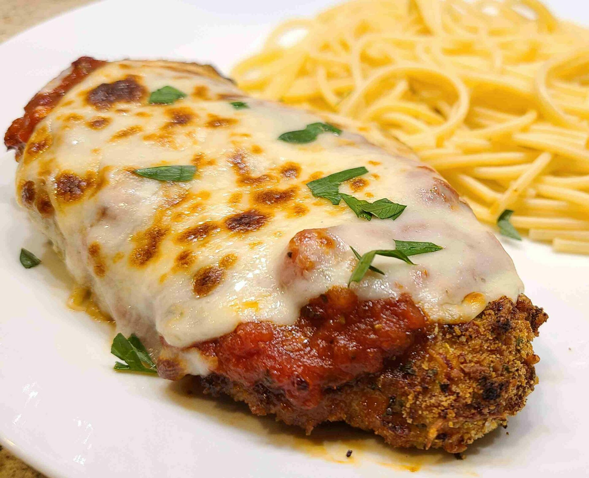

Chicken Parmesan

Chicken Parmesan, also known as Chicken Parmigiana, is a popular Italian-American dish that features breaded and fried chicken cutlets topped with marinara sauce and melted cheese.
It is typically served with pasta or as a sandwich filling. Here's a simple recipe for Chicken Parmesan:
- 2 boneless, skinless chicken breasts
- 1 cup bread crumbs
- 1/2 cup grated Parmesan cheese
- 1 teaspoon dried basil
- 1 teaspoon dried oregano
- 1/2 teaspoon garlic powder
- Salt and pepper to taste
- 2 eggs, beaten
- 1 cup marinara sauce
- 1 cup shredded mozzarella cheese
- Fresh basil leaves (optional, for garnish)
- Cooking oil for frying
- Preheat your oven to 375°F (190°C).
- Butterfly the chicken breasts by slicing them horizontally almost all the way through, then open them up like a book.
- In a shallow dish, mix together the bread crumbs, grated Parmesan cheese, dried basil, dried oregano, garlic powder, salt, and pepper.
- Dip each chicken breast into the beaten eggs, allowing the excess to drip off. Then coat the chicken with the bread crumb mixture, pressing it gently to adhere.Dip each chicken breast into the beaten eggs, allowing the excess to drip off. Then coat the chicken with the bread crumb mixture, pressing it gently to adhere.
- Heat cooking oil in a large skillet over medium-high heat. Once hot, add the breaded chicken breasts and cook until golden brown and crispy on both sides, about 3-4 minutes per side. Remove the chicken from the skillet and drain excess oil on a paper towel.
- Spread a thin layer of marinara sauce on the bottom of a baking dish. Place the cooked chicken breasts on top of the sauce. Spoon additional marinara sauce over each chicken breast, and sprinkle shredded mozzarella cheese on top.
- Bake the chicken in the preheated oven for about 20 minutes or until the cheese is melted and bubbly, and the chicken is cooked through.
- Optional: For a golden, crispy topping, you can broil the chicken for a couple of minutes until the cheese is slightly browned.
- Remove the Chicken Parmesan from the oven and let it rest for a few minutes. Garnish with fresh basil leaves, if desired.